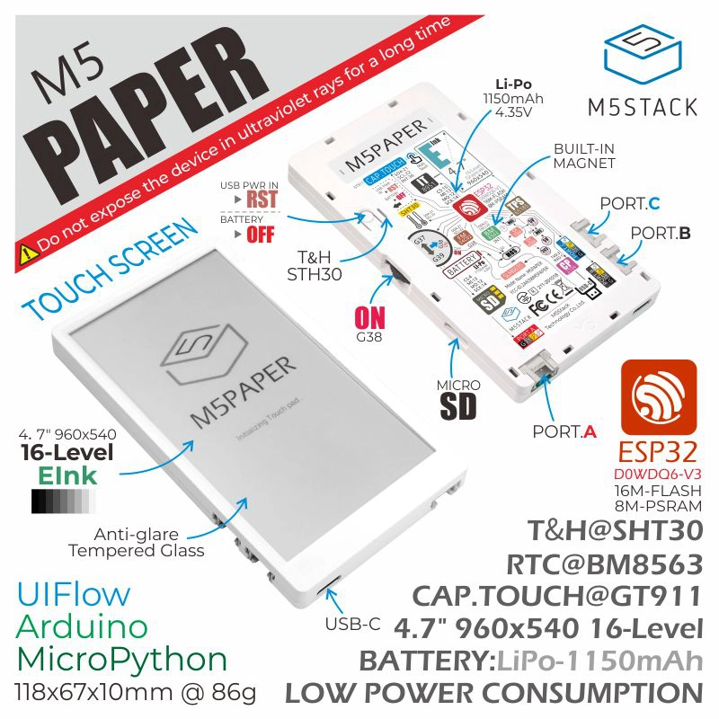

M5Paper Ink Clock
通过 USB 或蓝牙连接设备，保存 Wi-Fi、时区和时钟样式。
需要 Chrome 或 Edge，并从 localhost 或 HTTPS 打开。

未连接
先扫描，再选网络，最后保存到设备或立即连接 Wi-Fi。
连接设备后可以开始扫描。
保存后会写入设备存储，重启后继续生效。
舒适区间显示 (^_^)，超出范围显示 (-^-)。
配置保存
仅保存不会联网；保存并连接会写入配置、连接 Wi-Fi，并同步时间。
设备操作
危险操作
Chrome 会记住你授权过的串口，页面打开后会自动恢复连接。
蓝牙连接需要先在设备附近点“连接蓝牙”并选择 M5Paper Clock。
日常升级优先使用 OTA；字体、分区变化或首次安装时再使用完整刷写。
保留配置，只替换应用固件。
读取 release metadata 后可以通过 Wi-Fi 执行 OTA 更新。
仅支持 USB 串口上传应用固件 bin，保留设备配置。
用于首次安装、字体或分区变化。
可能清除设备配置，包括 Wi-Fi、时区、时钟样式、行情标的和表情条件。
当前浏览器不支持 WebSerial，请使用桌面版 Chrome 或 Edge。
请通过 localhost 或 HTTPS 打开页面。
支持大盘指数和 A 股股票，按代码搜索后直接设为首页行情卡片。
热门标的在下方；输入代码后右侧显示搜索结果。
连接设备后即可搜索并切换行情标的。